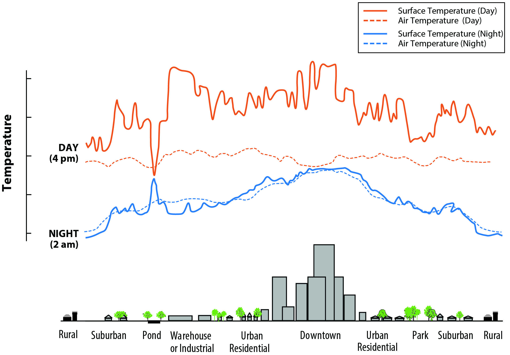
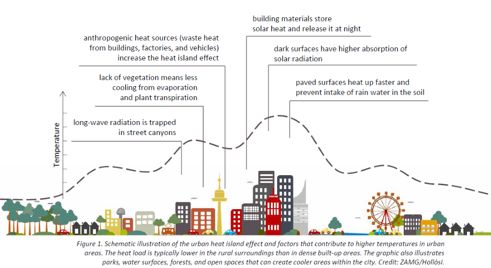
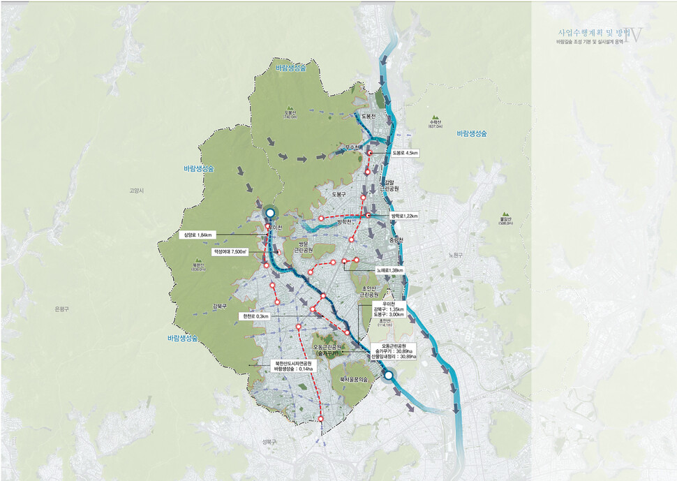

8 Urban Heat Island
In this diary, I am going to give general information about Urban Heat Island (UHI) with some on-going UHI mitigation examples all around the world.
Then, I will explain how UHI-related policies at a global-, metropolitan-, and local-level vary in terms of its goal and implementation scale, and ponder how we could bridge the gap that exists between these different levels of policies.
8.1 8.1 Summary
8.1.1 What is Urban Heat Island?
- Definition: UHI is a phenomenon where the temperature in an urban area is much warmer than its rural areas.
Causes:
Urban materials which reflect less solar energy and absorb more sun’s heat - building roofs, pavements and parking lots (US EPA, 2022)
Lack of urban green spaces which do evapo-transpiration and solar blocking (US EPA, 2022)
Heat generating human activities, such as A/C, industrial activities and vehicles, etc) (US EPA, 2022)
Urban geometry which blocks wind corridor - tall buildings and narrow streets create urban canyons (US EPA, 2022)

Impacts:
- Social impacts:
- Increased energy consumption, which cause a positive feedback loop
- Heat-related illness and increased mortality rate due to heat stroke
- Environmental impacts:
- Higher temperature during the daytime and reduced nighttime cooling effects
- Increased green house gas emissions
- Economic impacts:
- Increased price of electricity
- Rise in food price due to dry and hot weather
- Social impacts:
Do you want to know more about UHI? Check out this amazing UHI Interpretative Dance Video made by CASA students!!
8.2 8.2 Application
In this section, I am going to introduce Seoul’s urban planning policy with respect to UHI, and see how UHI mitigation activities under the metropolitan policy is in line with global policy.
8.2.1 8.2.1 Metropolitan-level Policy
- Overview: Seoul Plan is a metropolitan-level urban planning policy in Seoul, South Korea. The plan consists of 5 focal points, and one of which is environment. Under the environment part, there are 3 targets and 11 strategies.
8.2.1.1 Policy relevant to UHI
Focal Point 4: A city where life thrives/breathes
Target 1: Urban park-led ecological city
Strategy 1.2: Enhancement of Urban Climate Control Capacity
- Guideline 1.2.2: Urban Heat Island Mitigation/Reduction
8.2.1.2 UHI Reduction Activities
The Guideline 1.2.2 lists a number of UHI reduction activities which are as follows:
- Enabling wind corridor which brings fresh air from forests to city centre

{kind=link}
Note. Arrows indicate the main wind flow route. Forests play a key role in directing wind flow to city centre.
- Implementation of mist spray and shade canopy in the parks and bus stops
- Configuration of urban waterfronts and urban parks
Limitation:
Some of the mitigation activities do not necessarily cope with main causes of UHI. There should also consideration for road paving materials which enable percolation of rainwater.
More specific and granular-scale guidelines for implementing UHI-mitigation urban parks are needed to better locate the urban parks within the city. This is where remote sensing data could come into play in deciding the optimal location of urban green spaces. Sentinel 3 can be used to detect highly unusual temperature in cities.
A link to Global Agenda: Seoul Plan’s UHI reduction activities could contribute to UN SDG 11. The activities listed contribute to building an environment risk resilient city. In particular, one of the UHI reduction activities under Guideline 1.2.2: configuration of urban waterfronts and urban parks is linked to
SDG 11.7.1: Average share of the built-up area of cities that is open space for public use for all, by sex, age and persons with disabilities.

8.3 8.3 Reflection
This week’s lecture was an extended lecture of the week 4, where we learnt about policies. A few weeks ago, I did not understand the reason why there are varying levels of policies. As each country faces country-specific challenges and their contexts are quite different, I had somewhat suspicion about following global policies. However having UHI as an example enabled me to grasp the importance of creating a cohesive link between different levels of policies.
Takeaway message?
It is true that global policies are ambiguous and provide unclear guidance, and each country has different context. Yet, we need to have an agreed, standardised approach as it helps us assess and monitor the actions we take, and allows for comparing outputs. As long as the local-level policies are in accordance with a higher level policies, I do believe that some adjustments can be made to better cope with the local issues.
8.4 References
United Nations (n.d.) SDG Indicators. Available at: https://unstats.un.org/sdgs/indicators/indicators-list/ (Accessed: 24.03.2023)
United States Environmental Protection Agency (US EPA) (2022) Learn About Heat Islands. Available at: https://www.epa.gov/heatislands/learn-about-heat-islands (Accessed: 14.03.2023)